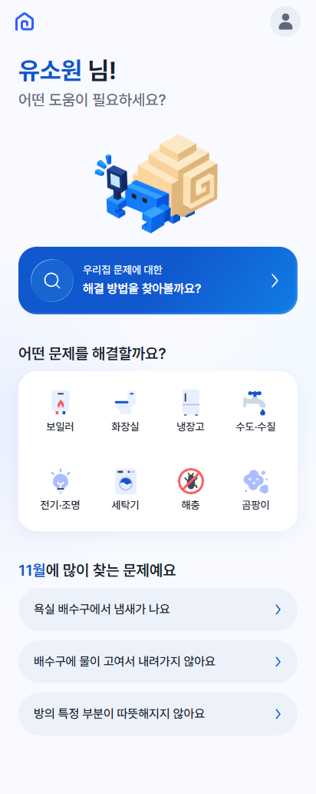

HOWHOUSE · MICRO INTERACTION STUDY
작은 반응으로, 다음 행동을 명확하게

A01 홈 · 실제 브라우저 캡처
기존 사례 검색 버전 기준
기존 사례 검색 버전 기준
01어디에, 왜 필요한가?
홈에서 다음 화면으로 진입하는 세 영역을 선정했다. 기존 밝기·배경 피드백에 짧은 움직임을 더해, 누른 대상과 이동 방향을 구분하도록 설계했다.
검색 배너 — 시작 행동을 확인넓은 배너를 얕게 눌러 검색 진입의 입력 반응을 전달한다.
8개 카테고리 — 선택 대상을 확인선택한 아이콘만 압축한다. 글자와 터치 영역은 고정한다.
인기 문제 — 상세 이동을 예고행의 상태색과 오른쪽 화살표 이동으로 상세 진입을 알린다.
설계 원칙
기존 레이아웃·색상 토큰·목적지 유지. 클릭 즉시 탐색하며 모션 완료를 기다리지 않는다. 움직임 줄이기에서는 상태색만 남긴다.
기존 레이아웃·색상 토큰·목적지 유지. 클릭 즉시 탐색하며 모션 완료를 기다리지 않는다. 움직임 줄이기에서는 상태색만 남긴다.
02레퍼런스를 동작으로 분해
Motion의 whileTap 예제를 입력 시작 → 임시 변형 → 해제 / 취소로 분석했다. 예제 scale .9 대신 .98 / .94를 설계하고 React 상태 + CSS로 적용했다. MDN을 참고해 reduced-motion 분기를 추가했다.
03동작 정의표
| 영역 / 동작 | 상태 변화 | 모션 정의 | 실행 순서 / 목적지 |
|---|---|---|---|
| 검색 배너 탭 · Enter/Space | 기본 → 눌림 → 해제 | scale 1→.98 · 밝기 .94 즉시 해제·취소 후 160ms 복귀 | 누름 → 면 압축 → click → 사례 검색 A08 |
| 카테고리 탭 · Enter/Space | 기본 → 눌림 → 해제 | 아이콘 scale 1→.94 즉시 해제·취소 후 160ms 복귀 | 누름 → 해당 아이콘 반응 → click → 해당 B01 |
| 인기 문제 탭 · Enter/Space | 기본 → 눌림 → 해제 | 기존 pressed 배경 즉시 화살표 0↔4px · 각 160ms | 누름 → 행·화살표 반응 → click → 해당 B02 |
| 취소 / 접근성 | 눌림 → 기본 reduce → 색상만 | 영역 이탈·스크롤 취소·blur 초기화 reduce: 변형·전환 생략 | 취소된 포인터 click 차단 native 키보드·포커스 유지 |
공통 easing: cubic-bezier(.4,0,.2,1). 160ms·밝기 .94는 기존 값, scale .98/.94는 과제 설계값. 빠른 탭은 모션 완료 전에 화면이 전환될 수 있다.
04Main 복사와 구현
origin/main @ 786b11a에서
마이크로인터렉션_유소원 브랜치 생성.
HomePressButton·home.css·ListRow를 수정하고 usePressFeedback으로 입력 상태를 공유했다. 신규 SDK 없이 키보드·취소 동작을 보완했다. 상세 정의표와 검증 스크립트를 함께 저장했다.
05검증과 AI 활용
타입 검사 · 검토용 빌드 · 기반 검사 통과
Edge에서 10개 검증 항목 통과: 탐색·키보드·취소·reduce·360/412/768px 반응형 등.
Codex로 코드 분석·상태표·구현·검증·PDF 편집을 수행했다. Figma 수정은 수행하지 않았다. Android 실기기와 사용성 개선 효과는 미검증이며, 기존 번들 크기 경고는 남아 있다.
참고: Motion · React gestures / MDN · prefers-reduced-motion (2026.11.22 확인)
코드 근거: Main의 HomePressButton.tsx · Rows.tsx · home.css · DESIGN.md · CONTRACT.md
상세 산출물: docs/microinteraction/동작정의_유소원.md · verification.json | 로컬 브랜치 완료, 원격 push·Main 병합 미실행
코드 근거: Main의 HomePressButton.tsx · Rows.tsx · home.css · DESIGN.md · CONTRACT.md
상세 산출물: docs/microinteraction/동작정의_유소원.md · verification.json | 로컬 브랜치 완료, 원격 push·Main 병합 미실행